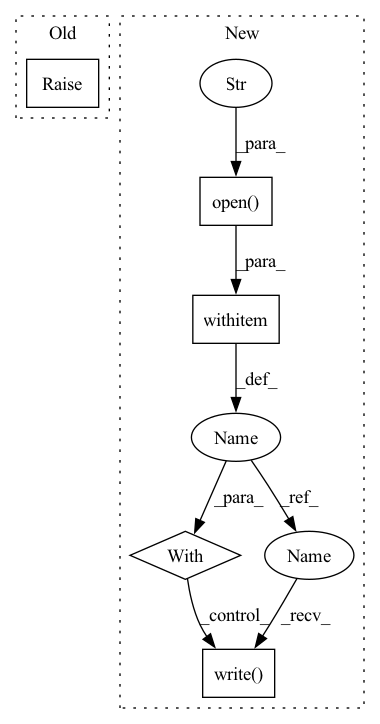

Pattern ID :19303
Before Change
// if not fileio.exists(file_path):
// fileio.(file_path, file_contents)
raise NotImplementedError
def append_file(file_path: Text, file_contents: Text):After Change
// fileio.(file_path, file_contents)
full_path = Path(file_path)
create_dir_recursive_if_not_exists(str(full_path.parent))
with fileio.open( str(full_path), "w") as f:
f .write( file_contents)
def append_file(file_path: Text, file_contents: Text):
Appends file_contents to file.In pattern: SUPERPATTERN
Frequency: 3
Non-data size: 5
Instances Fragment ID: 62891591
Project Name: maiot-io/zenml
Commit Name: 242effc6d759ea0530aed8d814b189439ee927c1
Time: 2021-09-17
Author: htahir111@gmail.com
File Name: zenml/utils/path_utils.py
M Class Name: AnonimousClass
N Class Name: AnonimousClass
M Method Name: create_file_if_not_exists(2)
N Method Name: create_file_if_not_exists(2)
M Parent Class:
N Parent Class:
M File Name: zenml/utils/path_utils.py
N File Name: zenml/utils/path_utils.py
M Start Line: 113
M End Line: 113
N Start Line: 135
N End Line: 140
Before Change
// return file_io.write_string_to_file(file_path, content)
// TODO: Check for prpoer implementation
raise NotImplementedError
def get_grandparent(dir_path: Text):After Change
file_path: Path to file.
content: Contents of file.
with fileio.open( file_path, "w") as f:
f.write( content)
def get_grandparent(dir_path: Text) -> Text:
Get grandparent of dir. Fragment ID: 62891590
Project Name: maiot-io/zenml
Commit Name: 242effc6d759ea0530aed8d814b189439ee927c1
Time: 2021-09-17
Author: htahir111@gmail.com
File Name: zenml/utils/path_utils.py
M Class Name: AnonimousClass
N Class Name: AnonimousClass
M Method Name: write_file_contents(2)
N Method Name: write_file_contents(2)
M Parent Class:
N Parent Class:
M File Name: zenml/utils/path_utils.py
N File Name: zenml/utils/path_utils.py
M Start Line: 264
M End Line: 264
N Start Line: 281
N End Line: 284
Before Change
raise NotImplementedError
def to_disk(self, path, exclude=tuple(), **kwargs):
raise NotImplementedError
def from_disk(self, path, exclude=tuple(), **kwargs):
raise NotImplementedErrorAfter Change
if len(self._tables):
path = ensure_path(path)
filepath = path / "lookups.bin"
with filepath.open("wb" ) as file_:
file_.write( self.to_bytes())
def from_disk(self, path, **kwargs):
Load lookups from a directory containing a lookups.bin.
Fragment ID: 62891589
Project Name: explosion/spaCy
Commit Name: 3e8f136ba7e400dc046e4a4571ffd3def948daf0
Time: 2019-09-09
Author: ines@ines.io
File Name: spacy/lookups.py
M Class Name: Lookups
N Class Name: Lookups
M Method Name: to_disk(2)
N Method Name: to_disk(3)
M Parent Class: object
N Parent Class: object
M File Name: spacy/lookups.py
N File Name: spacy/lookups.py
M Start Line: 40
M End Line: 41
N Start Line: 115
N End Line: 121